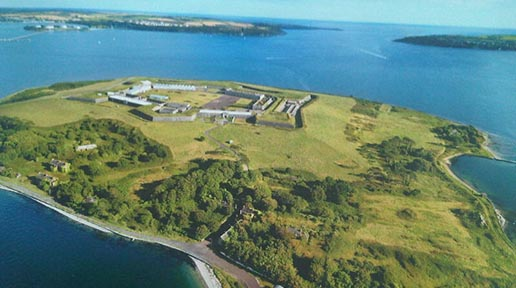
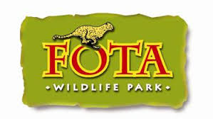

This is a picture of Spike Island. It is a small island located in Cobh Harbour.
As of 2015, Spike Island has become tour destination for tourists and locals alike. Anyone wishing to take part in the tour can get a boat from the harbour over to the island to take in in the fort, prison cells, gun emplacements, and anything
else that the island has to offer visitors to the "Fortress Spike Island" cultural heritage attraction can also tour the "punishment block."
In 2017, 2 years after opening the island for tours, Spike Island was named 'Europe's Leading Tourist Attraction' at The World Travel Awards

Fota Island is a wildlife park located a few short minutes from Cobh town.
If you are locals, or you are holidaying in the area and want to enjoy a special animal adventure, you can book a behind-the-scenes tour to get the best experience possible.
To enquire about tours call 021 481267 or visit www.fotawildlife.ie